Makie v0.23.0
Makie 0.23.0 is a relatively small breaking release before the big 0.24.0 ComputePipeline refactor. Its only breaking change is the
arrows() refactor.
Arrows
Arrows have been refactored to address a number of issues, most importantly issues with scaling and alignment. Before 0.23,
arrows did not consider the arrow tip as part of the length, which meant that arrows were always longer than they should be. This also applies to alignment, where
align = :tip would align arrows to the endpoint of the shaft (called tail pre-0.23) instead of the end of the tip.
The new
arrows2d and
arrows3d now strictly follow the rule that the drawn arrow length must match the length derived from
directions,
normalize and
lengthscale. To achieve this, the arrow shaft may elongate or the whole arrow may scale.
using CairoMakie
CairoMakie.activate!()
f = Figure(size = (600, 300))
hlines(f[1, 1], [0, 0.2, 2, 5])
arrows2d!(1:3, zeros(3), zeros(3), [0.2, 2, 5])
hlines(f[1, 2], [0, 0.2, 2, 5])
arrows3d!(1:3, zeros(3), zeros(3), [0.2, 2, 5], markerscale = 1)
f
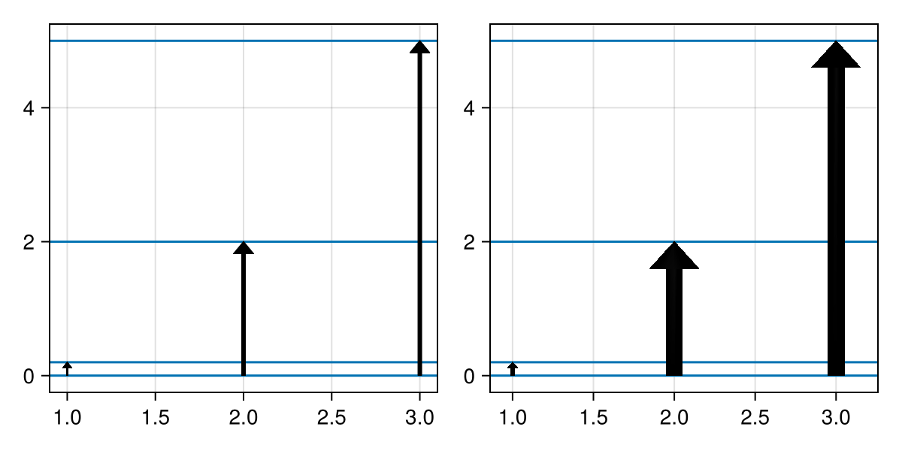
As you can see, short arrows shrink while long arrows get a longer shaft. This is controlled by
minshaftlength and
maxshaftlength. If the calculated shaft length falls in this range, the shaft is scaled to that length. If it does not, the length is clamped to that range and the full arrow is scaled instead. If you want just shaft length scaling, you can set
minshaftlength = 0. (Scaling will still happen if the shaft length drops to/below 0.) If you want just scaling, you can set
shaftlength to a fixed value.
using CairoMakie
CairoMakie.activate!()
f = Figure(size = (600, 300))
hlines(f[1, 1], [0, 0.2, 2, 5])
arrows2d!(1:3, zeros(3), zeros(3), [0.2, 2, 5], minshaftlength = 0)
a, p = hlines(f[1, 2], [0, 0.2, 2, 5])
arrows2d!(1:3, zeros(3), zeros(3), [0.2, 2, 5], shaftlength = 20)
xlims!(a, 0.9, 3.8)
f
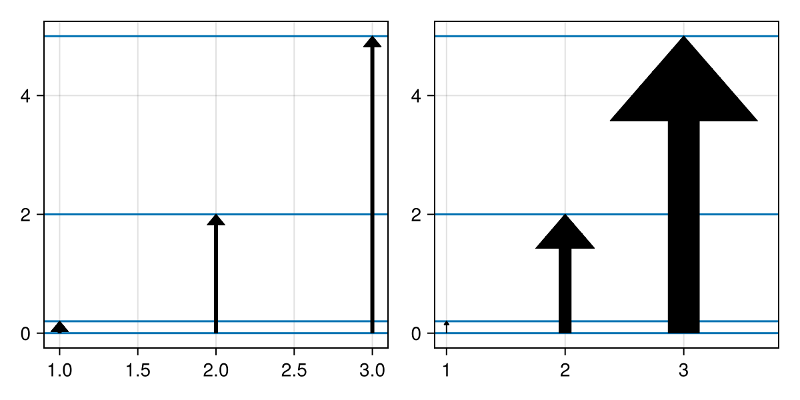
The styling attributes
arrowsize,
linewidth,
arrowtail, and
arrowhead have been broken up and renamed. There are now three components to an arrow: the (usually 0-length) tail, shaft, and tip. Each has a length and width (2D) or radius (3D). In 2D they are given in
markerspace, i.e., pixel space by default. Unlike before, they are not necessarily the true size of the final arrow, as scaling can still apply. In 3D they are given in a bounding box relative space if
markerscale = automatic (default), or in data units scaled by
markerscale if it is set to a number. The tail, shaft, and tip can each be set to a vector of points (2D) or mesh to change the look of the arrows.
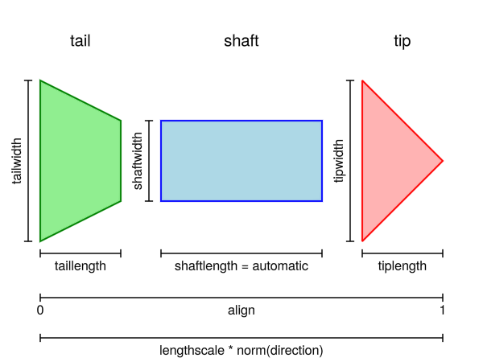
The total arrow length follows from the
direction argument,
lengthscale, and
normalize. If
normalize = true, directions are normalized first. Then they are multiplied by
lengthscale. The result is the target length of the arrow, which the drawn arrow marker must be equal to.
using CairoMakie
CairoMakie.activate!()
f,a,p = arrows2d(1:3, fill(0, 3), zeros(3), [0.2, 0.5, 1])
arrows2d!(1:3, fill(2, 3), zeros(3), [0.2, 0.5, 1], normalize = true)
arrows2d!(1:3, fill(4, 3), zeros(3), [0.2, 0.5, 1], lengthscale = [5, 1, 0.2])
arrows2d!(fill(4, 3), [0, 2, 4], zeros(3), [0.2, 0.5, 1], taillength = 10)
f
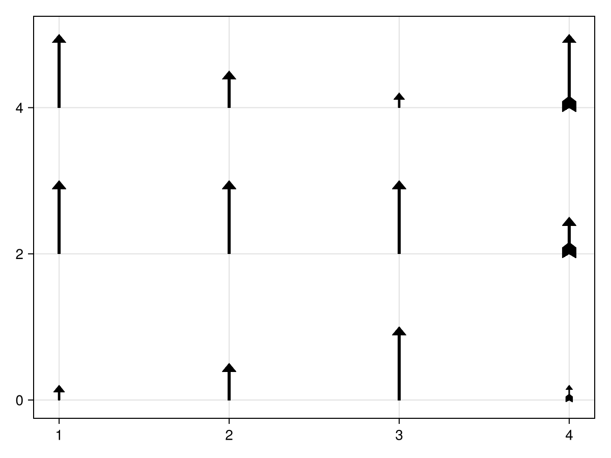
The
align attribute has been reduced to only accepting
:tail,
:center,
:tip, or a number.
:tail (0) and
:tip (1) are the two endpoints of the arrow, and
:center (0.5) is the center of the full arrow. Note that you can also create a gap by setting
align to a value outside the 0..1 range.
using CairoMakie
using Makie.GeometryBasics
CairoMakie.activate!()
ps = Makie.coordinates(Rect2f(-1, -1, 2, 2))
f = Figure(size = (600, 300))
scatter(f[1, 1], ps, markersize = 20)
arrows2d!(ps, ps, align = :center, lengthscale = 0.3)
scatter(f[1, 2], ps, markersize = 20)
arrows2d!(ps, ps, align = :tail, lengthscale = 0.3, color = :orange)
arrows2d!(ps, ps, align = 1.2, lengthscale = 0.3, color = :blue)
tail = Point2f[(0, 0), (1, -0.5), (1, 0.5)]
arrows2d!(
ps, [ps[2:end]; ps[1:1]], argmode = :endpoint,
align = :center, lengthscale = 0.8, color = :green,
tail = tail, taillength = 8
)
f
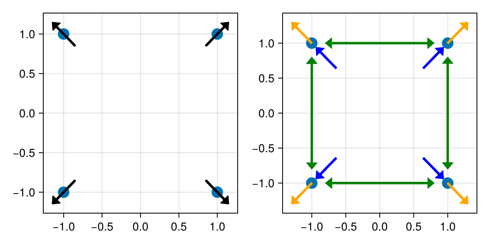
Another addition is
argmode, which allows you to change the interpretation of the second argument. With
argmode = :endpoint, the second argument is treated as the target position for the tip. The directions are then derived from that, with
normalize and
lengthscale applying afterwards.
align works a bit differently in this mode. Instead of aligning a fraction of the final arrow with the origin (first argument), it aligns that fraction with the same fraction between the endpoints. So with
align = :center, the center of the arrow aligns with the center of the two endpoints.
All of these concepts also apply to
arrows3d:
using GLMakie
using GLMakie.GeometryBasics
GLMakie.activate!()
f = Figure(size = (500, 500))
ax = Axis3(f[1, 1], aspect = :data)
r = Rect3f(-1, -1, -1, 2, 2, 2)
ps = coordinates(r)
meshscatter!(ps, color = :white)
arrows3d!(ps, ps, align = -0.2, tipcolor = :yellow, shaftcolor = :lightblue, lengthscale = 0.5)
tail = Makie.Cone(Point3f(0,0,1), Point3f(0), 0.5)
startstop = Makie.convert_arguments(LineSegments, r)[1]
arrows3d!(
startstop[1:2:end], startstop[2:2:end], argmode = :endpoint,
align = 0.5, lengthscale = 0.8,
tail = tail, taillength = 0.4, tailcolor = :red,
markerscale = 0.5,
color = :orange
)
f
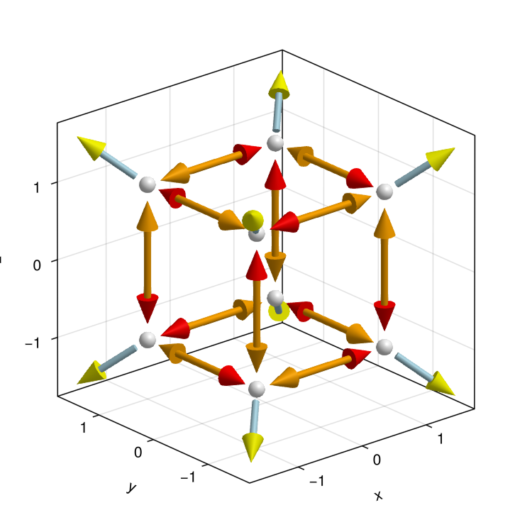
Note that
arrows2d and
arrows3d can both be used in 2D and 3D space. They differ in how they represent arrows - as a 2D mesh or a 3D mesh, respectively. Note as well that we introduced
Cone(origin, extremity, radius) as a GeometryPrimitive in
GeometryBasics with this release.
Dendrogram
We have finally added the
dendrogram recipe. Given a collection of leaf node positions and merge indices, a tree visualization is created.
using CairoMakie
CairoMakie.activate!()
# node positions and indices of pairs that merge
ps = Point2f.(1:8, 0)
merges = [(i, i+1) for i in 1:2:13]
f,a,p = dendrogram(ps, merges)
dendrogram(
f[2,1], ps, merges, groups = [1, 1, 1, 1, 2, 2, 3, 3],
colormap = [:red, :green, :blue], linewidth = 3,
branch_shape = :tree, rotation = :up
)
ax = PolarAxis(f[1:2,2:3])
cs = vcat(fill(:black, 8), fill(:green, 4), fill(:orange, 2), fill(:red, 1))
p = dendrogram!(ax, ps, merges, color = cs, width = 2pi - 2pi/9, linewidth = 5)
node_ps = Makie.dendrogram_node_positions(p)
textlabel!(
ax, node_ps, text = string.(1:15), shape = Circle(Point2f(0), 1),
shape_limits = Rect2f(-1,-1,2,2), keep_aspect = true
)
rlims!(ax, 0, 3.5)
f
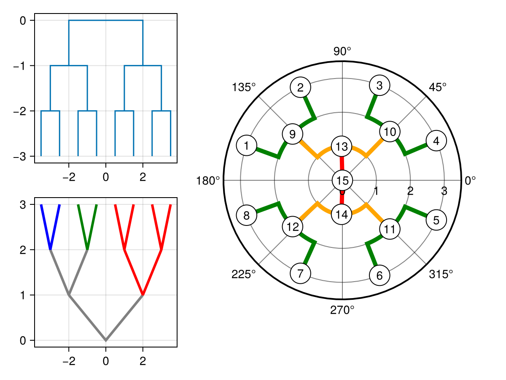
Backlog
In the following sections, we want to highlight some changes that happened since the last blog post for Makie 0.22.2.
Makie 0.22.8
Annotation
There's a new
annotation recipe which can be used to annotate data points with text labels and connecting arrows or other styles. If no specific label positions or offsets are given, the default behavior tries to move labels away from data points, other labels, and the figure boundary. This results in better readability for quick plots compared to a simple
text annotation:
using CairoMakie
CairoMakie.activate!()
f = Figure()
points = [(-2.15, -0.19), (-1.66, 0.78), (-1.56, 0.87), (-0.97, -1.91), (-0.96, -0.25), (-0.79, 2.6), (-0.74, 1.68), (-0.56, -0.44), (-0.36, -0.63), (-0.32, 0.67), (-0.15, -1.11), (-0.07, 1.23), (0.3, 0.73), (0.72, -1.48), (0.8, 1.12)]
fruit = ["Apple", "Banana", "Cherry", "Date", "Elderberry", "Fig", "Grape", "Honeydew",
"Indian Fig", "Jackfruit", "Kiwi", "Lychee", "Mango", "Nectarine", "Orange"]
limits = (-3, 1.5, -3, 3)
ax1 = Axis(f[1, 1]; limits, title = "text")
scatter!(ax1, points)
text!(ax1, points, text = fruit)
ax2 = Axis(f[1, 2]; limits, title = "annotation")
scatter!(ax2, points)
annotation!(ax2, points, text = fruit)
hidedecorations!.([ax1, ax2])
f
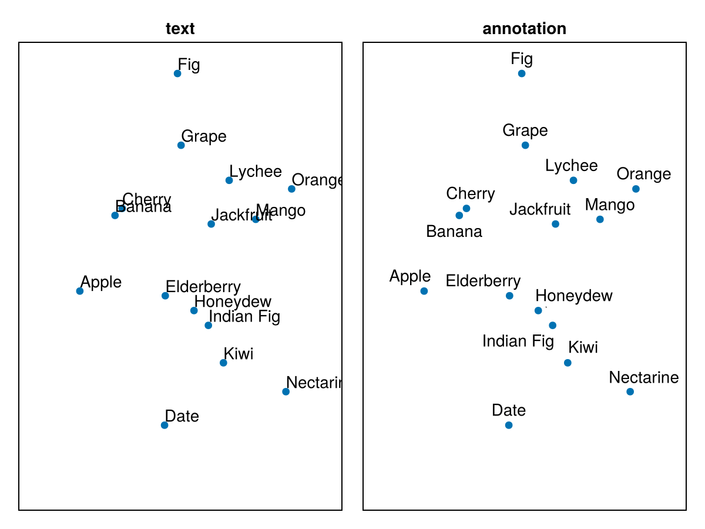
Annotation labels can be placed either in data space or relative to the target points in screen space, making it easy to achieve a consistent visual result regardless of axis scaling:
using CairoMakie
CairoMakie.activate!()
g(x) = cos(6x) * exp(x)
xs = 0:0.01:4
ys = g.(xs)
f, ax, _ = lines(xs, ys; axis = (; xgridvisible = false, ygridvisible = false))
annotation!(ax, 1, 20, 2.1, g(2.1),
text = "(1, 20)\nlabelspace = :data",
path = Ann.Paths.Arc(0.3),
style = Ann.Styles.LineArrow(),
labelspace = :data
)
annotation!(ax, -100, -100, 2.65, g(2.65),
text = "(-100, -100)\nlabelspace = :relative_pixel",
path = Ann.Paths.Arc(-0.3),
style = Ann.Styles.LineArrow()
)
f
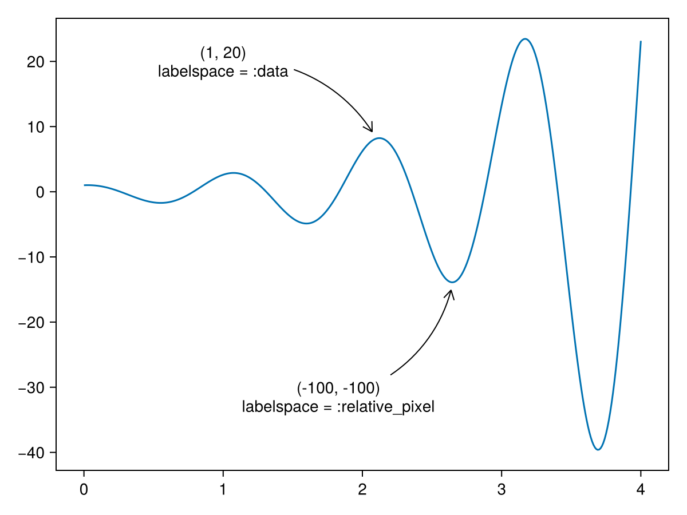
Annotations can come in a variety of styles, which will also be expanded in the future. Currently, lines and arrows of different shapes are supported:
using CairoMakie
CairoMakie.activate!()
fig = Figure()
ax = Axis(fig[1, 1], yautolimitmargin = (0.3, 0.3), xgridvisible = false, ygridvisible = false)
scatter!(ax, fill(0, 4), 0:-1:-3)
annotation!(-200, 0, 0, 0, path = Ann.Paths.Line(), text = "Line()")
annotation!(200, 0, 0, -1, path = Ann.Paths.Arc(height = 0.1), text = "Arc(height = 0.1)")
annotation!(-200, 0, 0, -2, path = Ann.Paths.Arc(height = 0.3), text = "Arc(height = 0.3)")
annotation!(200, 30, 0, -3, path = Ann.Paths.Corner(), text = "Corner()")
annotation!(-200, 0, 0, -5, style = Ann.Styles.Line())
annotation!(-200, 0, 0, -6, style = Ann.Styles.LineArrow())
annotation!(-200, 0, 0, -7, style = Ann.Styles.LineArrow(head = Ann.Arrows.Head()))
annotation!(-200, 0, 0, -8, style = Ann.Styles.LineArrow(tail = Ann.Arrows.Line(length = 20)))
fig
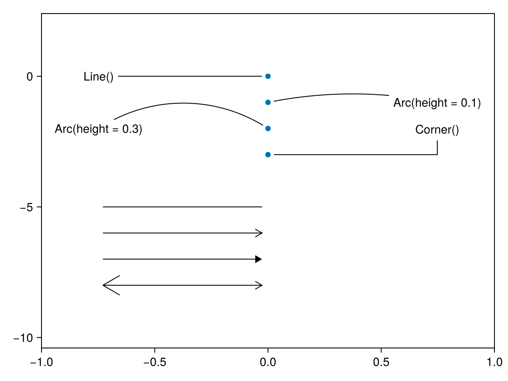
Makie 0.22.5
Legend entries for mesh, meshscatter, image, heatmap and surface plots
Legend now has entry visualizations for mesh, meshscatter and surface in 3D and image and heatmap in 2D:
using GLMakie
GLMakie.activate!()
f = Figure(size = (400, 400))
a,p = heatmap(f[1, 1:2], sin.(1:10)' .* sin.(1:10), label = "Heatmap")
image!(10.5..20.5, 0.5..10.5, sin.(1:10)' .* sin.(1:10), label = "Image")
axislegend(a)
a,p = meshscatter(f[2, 1], [rand(Point3f) + Vec3f(0,0,1) for i in 1:10] , label = "MeshScatter" => (color = :orange,))
mesh!(Rect3f(0,0,0,1,1,1), label = "Mesh" => (color = :lightblue,))
surface!(-1..2, -1..2, sin.(1:10)' .* sin.(1:10), label = "Surface")
Legend(f[2, 2], a, tellwidth = false)
f
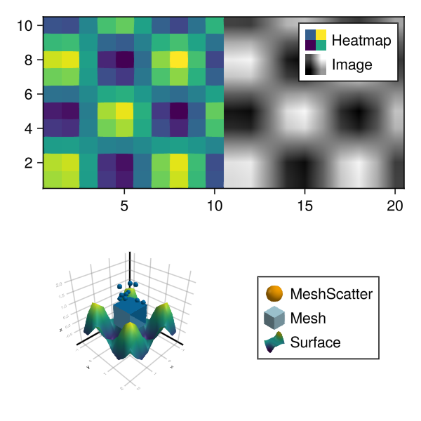
Hide/show interaction for Legend
You can now toggle the visibility of plots by left-clicking their respective
Legend entries. Right-clicking will toggle all connected plots, and middle-clicking will synchronize and toggle them.
PolarAxis Ticks
PolarAxis now supports
ticks (lines between tick labels and the axis frame). The related attributes are
r-,
rminor-,
theta-, and
thetaminor-:
-
-ticksvisible: Are ticks shown (default false) -
-ticksize: Controls the length of ticks -
-tickwidth: Controls the width of ticks -
-tickcolor: Controls the color of ticks -
-ticksmirrored: Swaps the tick location to the opposite end of the PolarAxis if the PolarAxis doesn't span a full circle (rmin > 0orthetamax - thetamin < 2pi) -
-tickalign: Controls the alignment of ticks relative to the frame (default 0, point outwards)
using CairoMakie
CairoMakie.activate!()
f = Figure(size = (800, 400))
kwargs = (
rticksvisible = true, rticksize = 12, rtickwidth = 4, rtickcolor = :red, rtickalign = 0.5,
thetaticksvisible = true, thetaticksize = 12, thetatickwidth = 4, thetatickcolor = :blue, thetatickalign = 0,
rminorticksvisible = true, rminorticksize = 8, rminortickwidth = 3, rminortickcolor = :orange, rminortickalign = 1.0,
thetaminorticksvisible = true, thetaminorticksize = 8, thetaminortickwidth = 3, thetaminortickcolor = :cyan, thetaminortickalign = 1.0,
)
a = PolarAxis(f[1,1], title = "normal", rticksmirrored = false, thetaticksmirrored = false; kwargs...)
rlims!(a, 0.5, 0.9)
thetalims!(a, 1pi/5, 2pi/5)
a = PolarAxis(f[1,2], title = "mirrored", rticksmirrored = true, thetaticksmirrored = true; kwargs...)
rlims!(a, 0.5, 0.9)
thetalims!(a, 1pi/5, 2pi/5)
f
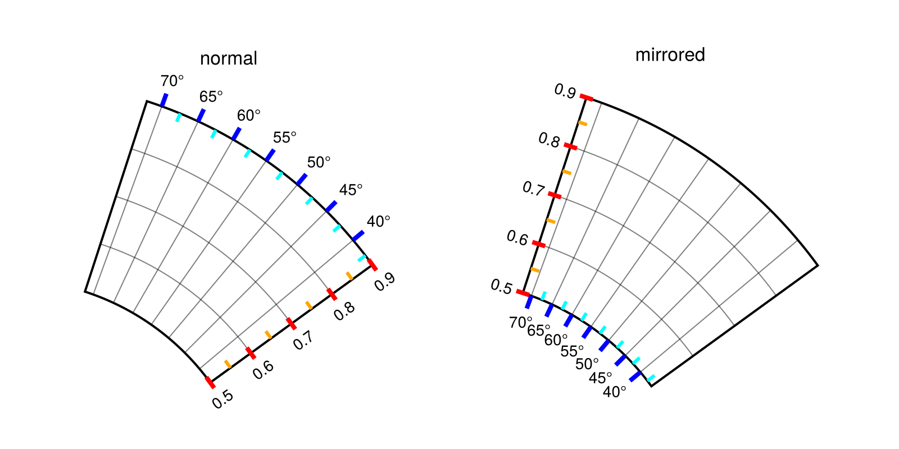
Anisotropic marker rendering in GLMakie & WGLMakie
Rendering scatter markers (or text) with anisotropic
markersize (or fontsize), e.g.,
markersize = Vec2f(10, 50), used to result in blurred or pixelated edges in WGLMakie and GLMakie. The reason for this is that the signed distance fields representing markers (characters) are generated at a different aspect ratio. We have now added a correction for this in shaders, which greatly reduces the blurring/pixelation:
using GLMakie
scene = Scene(size = (250, 250))
ms = [Vec2f(60, 10), Vec2f(60), Vec2f(10, 60)]
scatter!(scene, fill(-0.75, 3), [-0.75, 0.0, 0.75], marker = :rect, markersize = ms)
scatter!(scene, fill(0, 3), [-0.75, 0.0, 0.75], marker = :circle, markersize = ms)
scatter!(scene, fill(0.75, 3), [-0.75, 0.0, 0.75], marker = 'L', rotation = pi/3, markersize = ms)
scene
| Before | After |
|---|---|
| 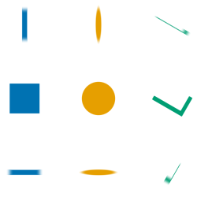 |

|
Makie 0.22.3
Textlabel
We added a new
textlabel recipe which plots text with a background.
using CairoMakie
CairoMakie.activate!()
f,a,p = textlabel(0, 0, text = "Default Label")
textlabel!(
a, fill(1, 3), 0:2, text = ["Label 1", "Label 2", "Label 3"],
shape = Circle(Point2f(0), 1), shape_limits = Rect2f(-1,-1,2,2), keep_aspect = true,
background_color = RGBf(1, 1, 0.7), text_color = :darkgreen, strokecolor = :orange,
fontsize = 20, strokewidth = 3, padding = 10
)
textlabel!(
a, 0, 2, text = "A long\nmultiline\nlabel",
cornerradius = 0, text_align = (:left, :top)
)
xlims!(a, -0.5, 1.5)
ylims!(a, -0.5, 2.5)
f
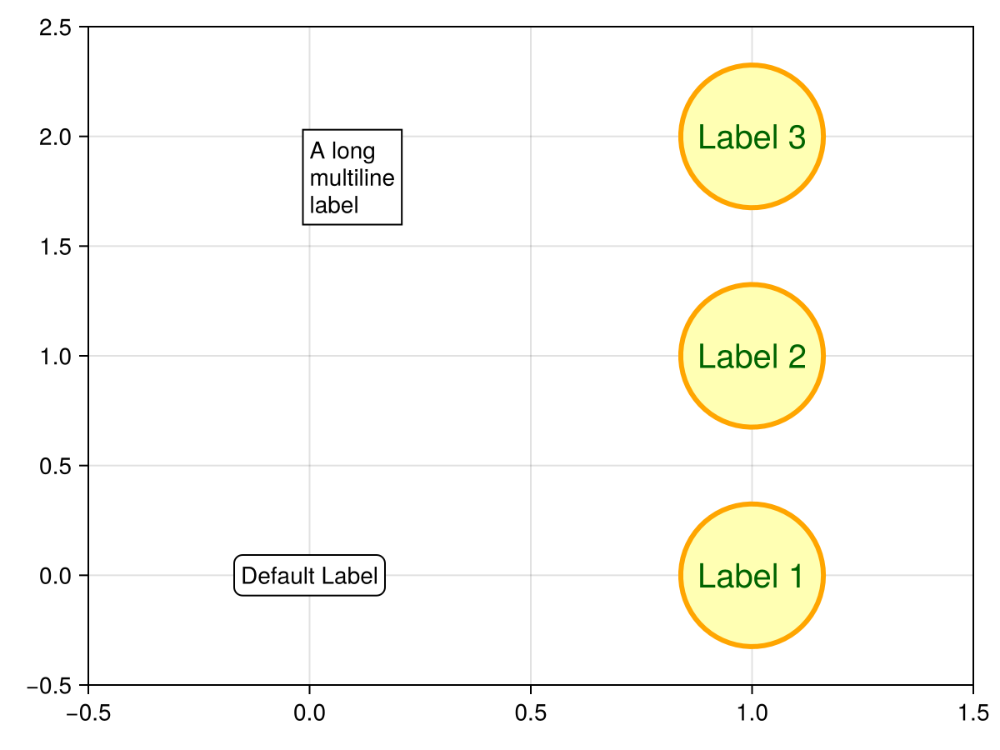
space and
transformation changes
space and plot transformations used to be intertwined. For example, transform functions used to consider
space, essentially running:
function apply_transform_func(func, data, space)
if is_data_space(space)
apply_transform_func(func, data)
else
return data
end
end
This meant you could never have a
transform_func apply to a plot that is not in data space. It also suggested that
space should control which transformations get applied, which would mean that each of the current space options should be split into four (with and without model and transform_func).
On the other hand, we were also checking space compatibility between plots and their parents during construction, only inheriting transformations if they were compatible. So a plot with
space = :pixel (and a parent that isn't in pixel space) would have identity transformations unless they were explicitly passed, meaning that applying them wouldn't actually change anything. We decided to rely on this as the source of truth. As such:
-
plots now always apply their transform_func
-
transformations can be explicitly (not) inherited by setting
plot(..., transformation = :inherit/:inherit_model/:inherit_transform_func/:nothing)
Scatter font
You can now set the
font used for rendering
Char markers in scatter plots.
using CairoMakie
CairoMakie.activate!()
kwargs = (marker = ['a', '♪', '@', '→'], markersize = 30)
f,a,p = scatter(1:4, fill(0, 4); color = :black, kwargs...)
scatter!(1:4, fill(1, 4); font = Makie.defaultfont(), color = :black, kwargs...)
scatter!(1:4, fill(2, 4); font = "Noto Sans", color = :blue, kwargs...)
scatter!(1:4, fill(3, 4); font = "Fira", color = :red, kwargs...)
f
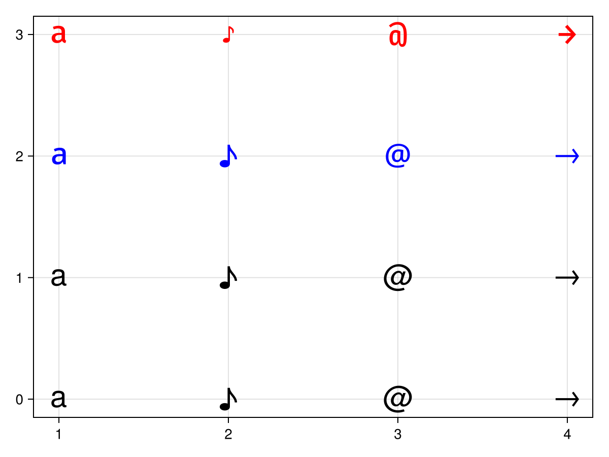